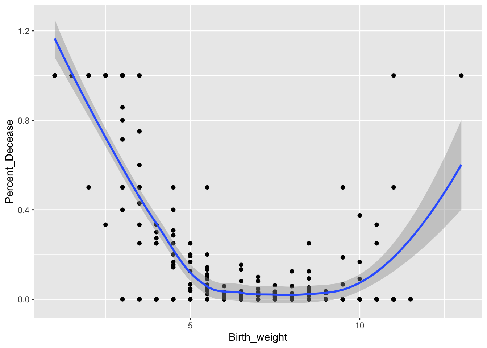

C7c_E11_I11_Importar
BIOL4026
Raymond L. Tremblay
Fecha de la ultima revisión
## [1] "2023-08-09"El tema proviene de los siguientes sitios.
English: https://r4ds.had.co.nz/data-import.html
Español: https://es.r4ds.hadley.nz/importaci%C3%B3n-de-datos.html
Temas: Funciones para importar datos con el paquete readr
- read_csv() # comma seperated variable,
- read_csv2()
- read_tsv()
- read_delim()
- read_fwf()
- read_width()
- read_positions()
- read_table()
col1, col2, col3, 3, 4, 6, 5,3,NA
; / ***
library(tidyverse)
library(readr)
Newborn_Karn_Penrose <- read_csv("Datos/Newborn_Karn_Penrose.csv")
#library(readxl)
#Newborn_Karn_Penrose1 <- read_excel("~/Google Drive/GitHub_Google_Drive/GitHub/Vintage_DATA/DATA/Human_Birth_Weight/Newborn_Karn_Penrose.xlsx", sheet = 3)
head(Newborn_Karn_Penrose)## # A tibble: 6 × 4
## Mother_age Count_Non_survivors Count_Total_Birth Birth_weight
## <dbl> <dbl> <dbl> <dbl>
## 1 16 0 1 9.5
## 2 16 0 2 9
## 3 16 0 1 8.5
## 4 16 0 3 8
## 5 16 0 7 7.5
## 6 16 0 2 7Hacer una columna de la proporción de los niños que no sobrevivieron.
Newborn_Karn_Penrose %>% select(Count_Non_survivors, Count_Total_Birth) %>% arrange(Count_Total_Birth, Count_Non_survivors) %>% mutate(Perc_sobrevivieron = Count_Non_survivors/Count_Total_Birth)
## # A tibble: 261 × 5
## Mother_age Count_Non_survivors Count_Total_Birth Birth_weight Percent_Decease
## <dbl> <dbl> <dbl> <dbl> <dbl>
## 1 16 0 1 9.5 0
## 2 16 0 2 9 0
## 3 16 0 1 8.5 0
## 4 16 0 3 8 0
## 5 16 0 7 7.5 0
## 6 16 0 2 7 0
## 7 16 0 4 6.5 0
## 8 16 0 2 6 0
## 9 16 0 2 5.5 0
## 10 16 0 1 5 0
## # ℹ 251 more rowsNewborn_Karn_Penrose %>% select(Count_Non_survivors, Count_Total_Birth, Birth_weight) %>% arrange(Count_Total_Birth, Count_Non_survivors) %>% mutate(porc_sobrevivieron = Count_Non_survivors / Count_Total_Birth)%>% ggplot(aes(x= Birth_weight, y=porc_sobrevivieron))+ geom_point()+ geom_smooth()
Newborn_Karn_Penrose %>%
mutate(Percent_Decease = Count_Non_survivors/Count_Total_Birth) %>%
ggplot(aes(Birth_weight, Percent_Decease)) +
geom_point() +
geom_smooth()
Newborn_Karn_Penrose %>%
mutate(Percent_Decease = Count_Non_survivors/Count_Total_Birth) %>%
ggplot(aes(Birth_weight, Percent_Decease)) +
geom_point() +
geom_smooth()+
facet_wrap(~Mother_age)
Comparar con base R
- Ejercicios:
Hacer los ejercicios en la sección 11.2.2 del libro en español
Segmentar un vector
- str(parse_logical())
## [1] "TRUE" "FALSE" "NA"## logi [1:3] TRUE FALSE NA## [1] "Carlos" "Kelvin"## logi [1:2] NA NA
## - attr(*, "problems")= tibble [2 × 4] (S3: tbl_df/tbl/data.frame)
## ..$ row : int [1:2] 1 2
## ..$ col : int [1:2] NA NA
## ..$ expected: chr [1:2] "1/0/T/F/TRUE/FALSE" "1/0/T/F/TRUE/FALSE"
## ..$ actual : chr [1:2] "Carlos" "Kelvin"## logi [1:3] TRUE FALSE NA## [1] "1" "2" "3"## [1] NA## int [1:3] 1 2 3## int [1:3] 1 2 3## Date[1:2], format: "2010-01-01" "1979-10-14"## [1] 4000 500## [1] 100## [1] 20## [1] 123.45- str(parse_integer())
- str(parse_date())
Números
- parse_double()
- parse_number()
- parse_number(locale=locale(grouping_mark = “.”))
Caderna de texto
parse_character()
charToRaw()
## [1] 52 61 6d 6ex1 <- "El Ni\xf1o was particularly bad this year"
x2 <- "\x82\xb1\x82\xf1\x82\xc9\x82\xbf\x82\xcd"
x3 <- "The boy was particularly bad this year"
library(readr)
parse_character(x1, locale = locale(encoding = "Latin1"))## [1] "El Niño was particularly bad this year"#> [1] "El Niño was particularly bad this year"
parse_character(x2, locale = locale(encoding = "Shift-JIS"))## [1] "こんにちは"## [1] "TRUE" "FALSE" NA- guess_encoding(charToRaw())
## # A tibble: 1 × 2
## encoding confidence
## <chr> <dbl>
## 1 ASCII 1Factores
- parse_factor()
Fechas, fechas-horas, horas
parse_datetime()
library(hms)
parse_time()
- Ejercicios:
Hacer los ejercicios en la sección 11.3.5 del libro en español
Segmentar un archivo
- guess_parser
Escribir un Archivo
- write_csv()
- write_tsv()
Otro tipos de datos
- library(haven) # SPSS, Stata y SAS
- readxl() lee archivo Excel en formato .xls, xlsx
- BDI lee archivo RMySQL y otros
## [1] "2015-01-02"## [1] "2015-01-02"## [1] NA